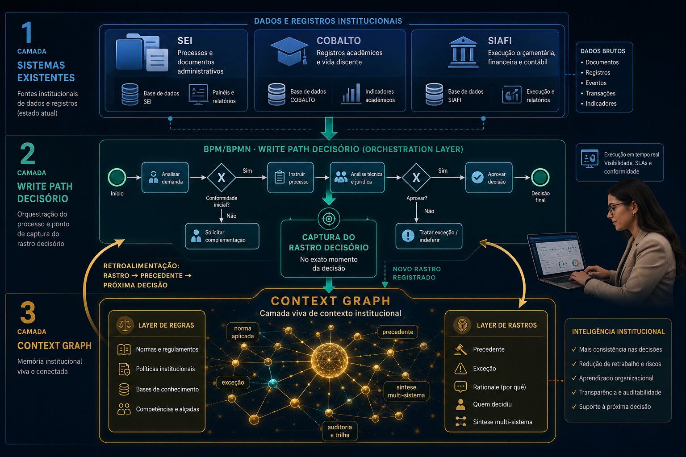

Estudo de Caso · Infográfico Científico · Edição Ampliada com artigo completo
Como o conceito de Context Graph encontra na tese de Bresque seu caso de aplicação mais preciso — e o que o artigo completo de Gupta & Garg adiciona: a distinção regras vs. rastros, o loop de retroalimentação e por que o SEI, sozinho, nunca será suficiente.
Um processo do SEI mostra o resultado. Não mostra o raciocínio. Esse é o nó que Bresque identifica empiricamente e que Gupta & Garg formalizam com precisão: «o raciocínio que conecta dado a ação nunca foi tratado como dado em primeiro lugar.»
«O verdadeiro gargalo não são os sistemas — são as pessoas, sua visão estratégica e sua capacidade de transformar dados em governança institucional.»
— Bresque (2026), p. 183 · mesma conclusão que Gupta & Garg chegam pelo caminho do capital de riscoO artigo completo faz uma distinção operacional precisa que transforma o diagnóstico em receita de implementação: regras dizem o que deveria acontecer em geral; rastros capturam o que aconteceu neste caso específico. São dois tipos radicalmente diferentes de dado — e o SEI só tem o primeiro.
O bloco de cima existe nas bases do SEI. O bloco de baixo está na cabeça de E3. O Context Graph é o sistema que torna o segundo tão consultável quanto o primeiro.
O ponto mais importante do artigo completo, ausente nas versões resumidas: o Context Graph não é um repositório estático de conhecimento. É um sistema de retroalimentação que cresce com cada decisão, tornando a próxima decisão mais informada — e eventualmente automatizável.
Gupta & Garg fazem uma distinção técnica que elimina os sistemas estabelecidos: capturar rastros exige estar no write path — no momento exato em que a decisão acontece. O SEI está no write path documental; não está no write path decisório. Essa diferença não pode ser remendada.
«Capturar rastros de decisão exige estar no execution path no momento do commit — não boltar governance depois do fato. Incumbentes podem tornar a extração mais difícil, mas não conseguem se inserir em um orchestration layer do qual nunca fizeram parte.»
— Gupta & Garg (2025) · Foundation Capital · «Why incumbents can't build the context graph»| Sistema / Camada · UFPel | Posição no fluxo decisório | O que captura | Consegue construir CG? |
|---|---|---|---|
| SEI | Write path documental — registra o documento resultante | Documento final, assinaturas, timestamps, status do processo | ❌ Captura estado, não raciocínio |
| COBALTO | Sistema de registro acadêmico — estado atual | Dados correntes; sem histórico do raciocínio que os gerou | ❌ Mesmo problema estrutural |
| SIAFI | Read path financeiro federal — dados chegam após execução | Execução orçamentária; o contexto de alocação já sumiu | ❌ ETL tardio — context gone |
| 185 bases de GC (SEI) | Repositório de regras — captura o que deveria acontecer | Normas, fluxos padronizados, competências mapeadas | ⚠️ Embrião — layer de regras, não de rastros |
| BPM/BPMN (SGTIC) | Write path do processo — mapeia o fluxo em tempo real | Fluxo, exceções identificadas, pontos críticos — se instrumentado para capturar raciocínio | ✅ É o orchestration layer — onde o CG deve ser instrumentado |
| Context Graph (proposto) | Write path decisório completo | Rastro: norma + precedente + exceção + síntese multi-sistema + rationale + feedback loop | ✅ O que precisa ser construído sobre o BPM |
No artigo de Gupta & Garg, a vantagem estrutural é de startups nativas de IA que «sit in the orchestration path desde o primeiro dia». Mas universidades públicas têm um ativo que startups não têm: 7 anos de decisões acumuladas. O SEI da UFPel tem 365 mil processos, 185 bases de GC e um BPM já operando. O grafo não começa do zero — precisa ser instrumentado sobre o que já existe. Essa é uma vantagem de tempo irreplicável.
Seis gestores da UFPel (E1–E6), entrevistas semiestruturadas, análise documental comparada com a ULE. Conclusão central: o SEI atingiu maturidade funcional relevante, mas opera como sistema documental — não como SAD. O gargalo não é tecnológico. É exatamente o que Gupta & Garg chamam de «missing decision traces».
Cada conceito central de Bresque tem agora um análogo exato no framework completo de Context Graph. A convergência não é superficial — é estrutural.
| Dimensão | Bresque (2026) · UFPel/ULE | Gupta & Garg (2025) · artigo completo |
|---|---|---|
| Problema nomeado | SEI registra o resultado; raciocínio vive nos gestores E1–E6 | «The reasoning connecting data to action was never treated as data» |
| Regras vs. rastros | 185 bases de GC capturam normas — mas não o por quê situacional | Rules = what should happen / Decision traces = what happened in this specific case |
| Síntese multi-sistema | E4 consulta COBALTO + SIAFI + e-mail; o SEI mostra só o resultado | «Support lead checks ARR, Zendesk, Slack — synthesis in their head. Ticket: 'escalated to Tier 3.'» |
| Write path decisório | BPM/BPMN da SGTIC é a única camada próxima do execution path | «Capturing traces requires being in the execution path at commit time» |
| Limitação dos sistemas | SEI, COBALTO e SIAFI são current state storage | «Salesforce is built on current state storage — can't replay the state at decision time» |
| Embrião do CG | 185 bases de GC: layer de regras — ponto de partida | Rules layer que o CG usa como base; rastros se sobrepõem às regras existentes |
| Feedback loop | «Agenda futura: casos rotineiros automatizáveis após acumulação de precedentes» | «Captured traces become searchable precedent. Every automated decision adds another trace. The loop compounds.» |
| Gargalo humano | «O verdadeiro gargalo são as pessoas e sua visão estratégica» | O loop só funciona se o humano registra o raciocínio; sem isso, o grafo não cresce |
| Solução proposta | SAD Ecosistêmico: BPM + GC + capacitação estratégica sobre sistemas existentes | Context Graph: instrumentar o orchestration layer (BPM) para emitir decision trace a cada run |
Bresque (2026) descobre empiricamente, na gestão de uma universidade federal brasileira, o mesmo problema que Gupta & Garg (2025) formalizam como oportunidade de um trilhão de dólares: as organizações não registram o raciocínio que governa suas decisões — e por isso não conseguem escalar a inteligência institucional, automatizar com segurança ou garantir continuidade quando as pessoas saem.
— Síntese integradora · Context Graph aplicado à gestão universitária · maio/2026SEI + COBALTO + BPM da SGTIC + 185 bases de GC — o esqueleto já está lá. O Context Graph universitário não começa do zero: precisa ser instrumentado sobre o ecossistema existente para capturar o que hoje vive nas cabeças dos gestores.

As recomendações de Bresque já apontam o caminho. O artigo de Gupta & Garg mostra por que a ordem importa: o loop só começa quando o write path decisório está instrumentado. Sem isso, os demais movimentos produzem mais documentos — não um grafo.
* Estimativa baseada em Bresque (2026). Barras douradas = dimensões do Context Graph ainda não implementadas.
O artigo integral de Gupta & Garg não muda a tese — torna-a mais precisa. Três contribuições que o resumo não capturava e que mudam como se implementa o Context Graph na UFPel.
O que Bresque chama de SAD Ecosistêmico e o que Gupta & Garg chamam de Context Graph são a mesma arquitetura: um sistema que não apenas armazena o que a instituição fez, mas preserva e torna consultável o raciocínio com que ela governou — e usa esse raciocínio acumulado para tomar a próxima decisão de forma mais informada, isônoma e eventualmente autônoma.
— Síntese integradora · Context Graph aplicado à gestão universitária · maio/2026